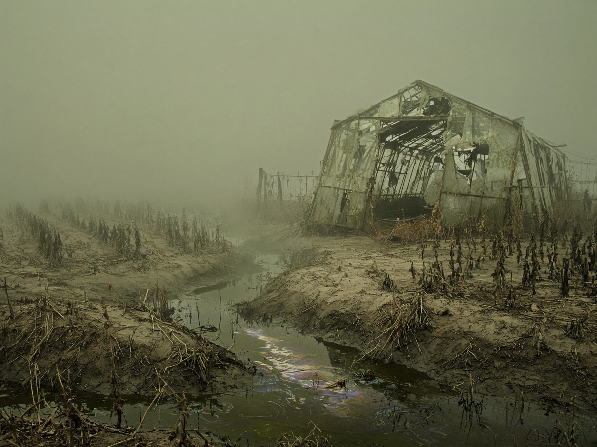

Terror ambiental
Samanta Schweblin: terror tóxico y la cuenta regresiva del desastre
El horror más preciso de esta década cabe en la distancia que hay entre una madre y su hijo.
Marcos Vidal · Agosto 2026 · 6 min de lectura

En Distancia de rescate el desastre no llega con una explosión: ya estaba en el agua, en el campo, en el aliento. Samanta Schweblin perfeccionó un terror que no necesita monstruos porque el monstruo es el modelo productivo. La cuenta regresiva no está en un reloj. Está en el cuerpo.
El desastre ya estaba en el agua.
Hay una escena —un hijo, una madre, unos metros que de pronto no alcanzan— que se volvió el diagrama de una época. Schweblin entendió antes que muchos novelistas “serios” que el extractivismo, los agrotóxicos y la fábula del campo argentino no eran tema de informe: eran materia de pesadilla. El tono, casi clínico, es parte de la trampa. Cuanto más limpia la prosa, más sucia el agua.
Kentukis, Pájaros en la boca, y más tarde las derivas de un realismo que ya no puede llamarse realismo, confirman el método: reducir el mundo a un dispositivo y ver qué queda de lo humano cuando el dispositivo se enciende. No hay consuelo ecológico. Hay una pregunta que esta revista insiste en hacerle a la literatura de terror: ¿de qué sirve el miedo si no nombra al responsable?
Schweblin no escribe panfleto. Escribe la cuenta regresiva como experiencia íntima. Por eso su terror es tóxico en el sentido literal y en el figurado: se pega, se hereda, se lleva en la ropa. Y, como el de Enriquez, funciona mejor cuando se lee en voz alta: el desastre, al fin, siempre fue colectivo.